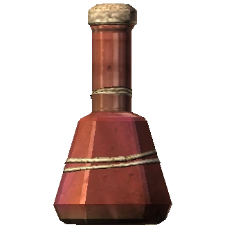
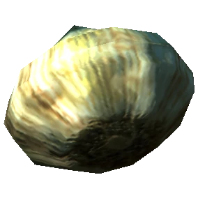
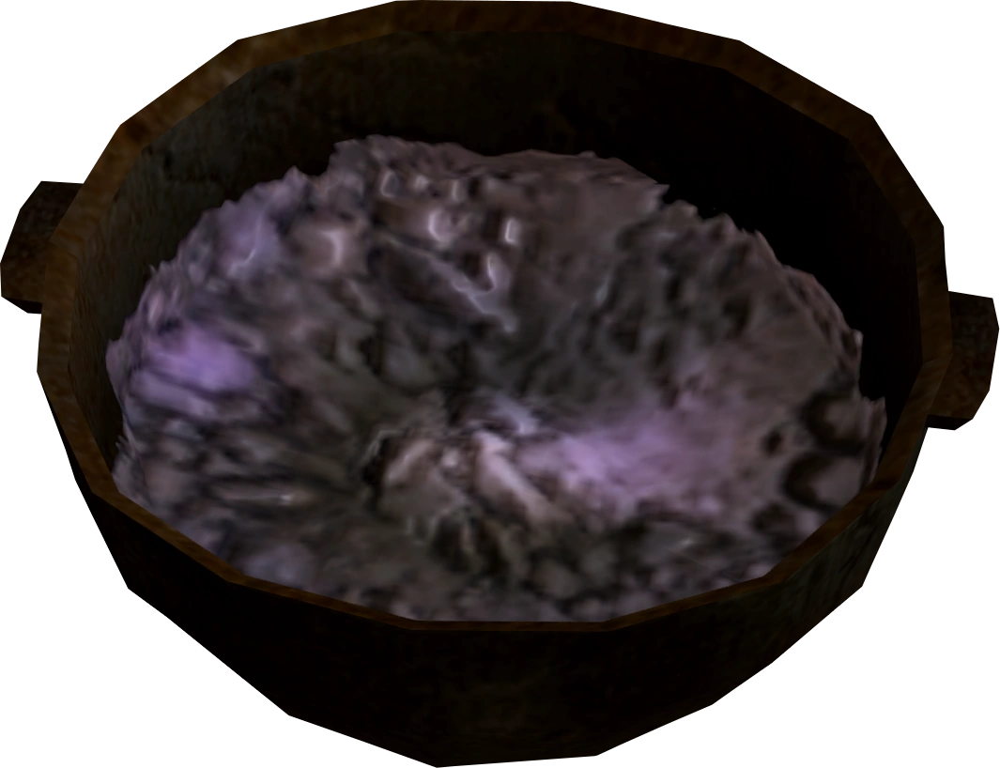
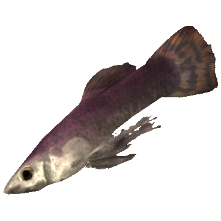

<div class="crafting">
  <div class="header">
    <select class="dropdown">
      <option value="" disabled selected>Ingredient location</option>
      <option value="Whiterun">Whiterun</option>
      <option value="Solitude">Solitude</option>
      <option value="Dawnstar">Dawnstar</option>
    </select>
  </div>

  <div class="crafting-container">
    <div class="potion-image">
      
    </div>
    <div class="crafting-details">
      <div class="ingredient-list">
        <div class="ingredient-item">
          
          <span class="quantity-indicator">x3</span>
        </div>
        <div class="ingredient-item">
          
          <span class="quantity-indicator">x2</span>
        </div>
        <div class="ingredient-item">
          
          <span class="quantity-indicator">x1</span>
        </div>
      </div>
      <div class="crafting-info">
        <div class="potion-title">Potion of Cure Disease</div>
        <button mat-raised-button color="primary" (click)="craft()" class="craft-btn">Craft</button>
      </div>
    </div>
  </div>

</div>
